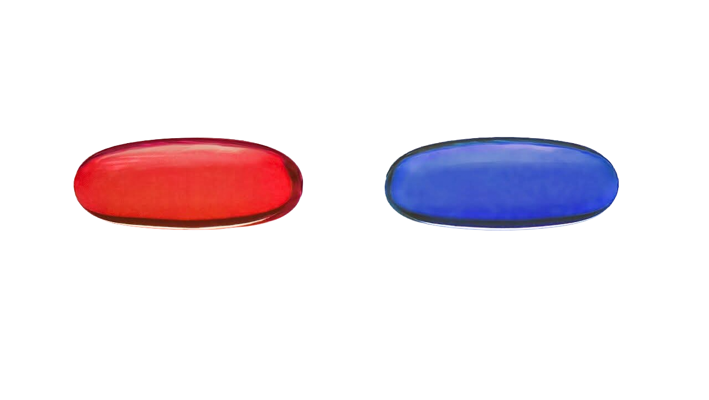
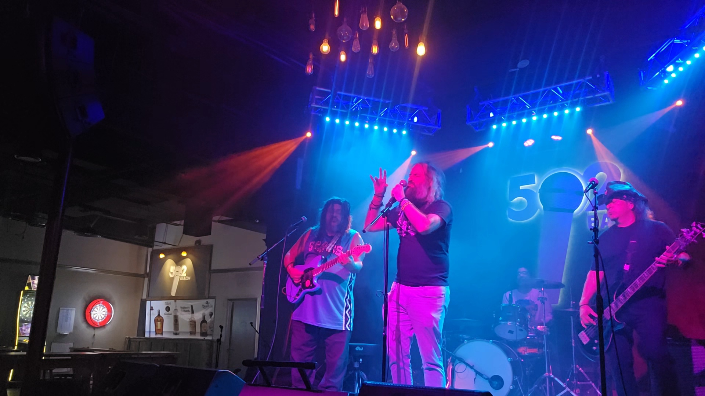

Cumbersome, Seven Mary Three (Cover)
by Red Pill Blue Pill, SATX


New music, live shows, booking
Reality or Illusion, hard or pop, you choose....
About
Red Pill Blue Pill -- started as a 90's and 00's rock cover band; now living to chart our own alt-rock originals somewhere in between. Justin Hill (lead singer) brings the emotional fire from Nirvana through The Killers; Marc Martinez (guitarist) brings decades of national and regional touring (Joshua Son, The Hit Squad, Semi Charmed Life, The Pop Rocks ATX) and tearing through the best of grunge and post-grunge alt-rock; and Sam Tovar (drums) and Juan Ornellas (bassist) bring some of the best rock drums and bass in all of San Antonio. Come see us, book us -- let us bring you and your patrons back to that moment those songs wrecked and transformed your life ....
Follow along for new releases, show footage, and upcoming dates. For booking, press, or collaboration inquiries, reach out below.
Video
Contact
Send show dates, venue details, or press requests and the band will get back to you.